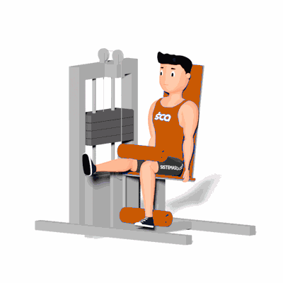

Banco Flexor Unilateral

Ele se apresenta como um dos exercícios capazes de trabalhar os isquiotibiais e promover o aumento de força e hipertrofia nestes. No caso dessa variação é recomendada para a correção de algum desequilíbrio de força ou diâmetro da coxa que pode ocorrer no caso de lesões no joelho.
Ficha Técnica
Tipo: Musculação
Grupo Muscular: Perna
Aparelho: Nenhum
Músculos: Nenhum
Como realizar
- Sentar no aparelho, apoiando bem a coluna, um dos pés deve estar estendido e o outro apoiado em cima da almofada, com esta na altura da linha dos tornozelos;
- Prestar atenção também ao travar a almofada que apoia na coxa, pois esta deve estar logo acima do joelho;
- Flexiona o joelho até contrair ao máximo o músculo da posterior da coxa;
- Retornar lentamente a posição inicial estendendo o joelho de maneira controlada;
- Efetuar o movimento pelo número de repetições previamente estipulada.
 RC STORE
RC STORE